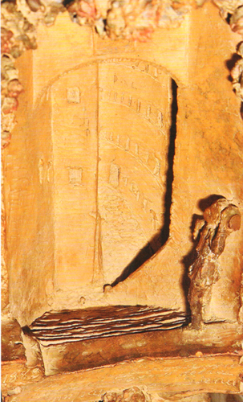
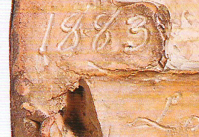
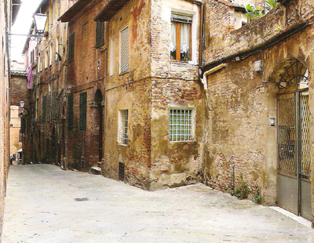
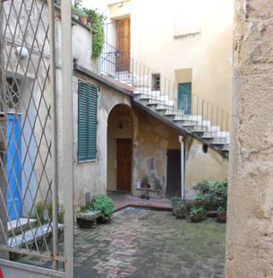
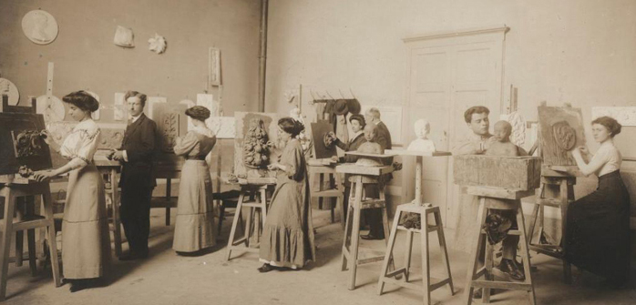

|
|
UNA MISTERIOSA "SCALACCIA"
di Alessandro Leoncini
Un angolo di Siena dimenticato e riscoperto grazie a una terracotta ottocentesca
Che Siena riservi chissà quante sorprese a coloro che si occupano del suo passato è cosa nota e ovvia, ma non capita tutti i giorni di scoprire l'immagine di un sorta di vicolo scomparso non nel medioevo, o comunque molti secoli fa, ma probabilmente solo alla fine dell'Ottocento, un'epoca che per chi lavora quotidianamente con le carte d'archivio non appare così così lontana.
Il ricordo di questo vicolo, una ripida scalinata definita "Scalaccia", è riaffiorato grazie a una piccola scultura in terracotta comparsa recentemente sul mercato antiquario.
Si tratta di un rilievo tridimensionale raffigurante un arco dal quale si accede a una scalinata ripida e scoscesa al cui inizio, appena abbozzata, è una figurina umana che sembra reggere qualcosa, forse una brocca, sulla spalla sinistra.
 
In basso è incisa un'iscrizione, una didascalia senza la quale sarebbe impossibile capire cosa raffiguri la terracotta: "La Scalaccia che / dalle Scole Regie con / duce al Forno delle / Campane a Siena". Sulla sinistra è la data: 1883

Per capire dove si fosse trovata esattamente questa "Scalaccia" abbiamo cercato di ricostruire con la fantasia il suo tracciato andando a ritroso rispetto all'iscrizione, immaginando cioè di poter risalire da via delle Campane verso le Scuole Regie, ovvero le vecchie Scuole Leopoldine di via del Poggio, oggi Istituto Tecnico Biologico Liceo Linguistico Monna Agnese.
In basso la scala sboccava nel punto in cui oggi è un negozio di pelletteria, al n.9 di via delle Campane, a lato del forno che prende nome dalla via. All'interno del negozio non è più visibile nessuna traccia della Scalaccia, ma il locale si sviluppa sotto una piccola corte che sia apre al n.13 di via del Poggio, proprio di fronte alle Scuole Regie.


La corte è delimitata da un arco - quello raffigurato nella terracotta - sul quale è collocata un'edicola con la Madonna con il Bambino copia di un bassorilievo di Benedetto da Majano conservato a New York, mentre l'autore della terracotta nel tabernacolo all'inizio della Scalaccia ha riprodotto la più familiare immagine della Madonna del Voto.
Dalla corte di via del Poggio, dunque, iniziava una scala tanto stretta e disagevole da essere definita con il dispregiativo di Scalaccia e che era tenuta così poco in considerazione da non essere raffigurata in nessuna pianta della città.

Sicuramente era un passaggio disagevole, probabilmente pavimentato con mattoni maltenuti e resi scivolosi dall'umidità e nel quale saranno stati frequenti ruzzoloni con conseguenti ammaccature subite da coloro che avevano avuto il coraggio di percorrerla. La scorciatoia tra vie delle Campane e via del Poggio deve essere stata ritenuta più pericolosa che utile e quindi, forse poco dopo il 1883, venne deciso di tamponarla, includendo il tratto iniziale nel prolungamento della piazzetta di via del Poggio e trasformando il tratto finale nel negozio adiacente all'antico forno delle Campane.
Questa, anche se priva di documentazione e un po' troppo approssimativa, è la ricostruzione ipotetica della Scalaccia, ma chi è l'autore del rilievo in terracotta? Sul retro era la firma, ormai illeggibile e della quale è possibile decifrare con certezza solo la data, 1883 e forse, nella prima parola, il nome Cesare.
Chiunque sia stato l'autore della terracotta, si era certamente formato nell'Istituto d'Arte di Siena perchè la piccola scultura e la sua cornice intagliata presentano evidenti riferimenti a opere realizzate in quegli anni da docenti dell'Istituto e da artisti e artigiani che erano stati loro allievi.
La "Scalaccia" è sormontata da una ghirlanda di fiori che ricorda la raffinata decorazione marmorea scolpita nel 1885 per la tomba di Maria Leva, moglie del professor Luigi Guaita, il fondatore della Clinica oculistica senese, nel Cimitero Monumentale della Misericordia. La tomba è firmata "C.Maccari", identificabile nel pittore e scultore Cesare Maccari, già allievo dell'Istituto d'Arte e fratello dello scultore Leopoldo.
Curiosamente, nella tomba la firma di Maccari è stato parzialmente cancellata con una grossa matita e sostituita a lapis da quella dell'orgoglioso scalpellino che aveva realmente realizzato il lavoro e che poteva benissimo essere stato anch'egli studente nell'Istituto d'Arte. Gli allievi dell'Istituto imparavano a dipingere, a modellare e a scolpire, e per i migliori di essi plasmare una terracotta come questa con la Scalaccia costituiva solo un'esercitazione.

La terracotta è inserita in una bella cornice di legno realizzata appositamente e intagliata con motivi di gusto rinascimentale, simili a quelli prodotti nella seconda metà dell'Ottocento da intagliatori alla Belle Arti, come Pasquale Leoncini, Tito Corsini, Carlo Bartolozzi, Giovanni Sammicheli e molti altri. Si tratta dunque di una piccola opera prodotta da una artista-artigiano senese di fine Ottocento, meritevole di essere valorizzata e studiata più approfonditamente.
Per ora non è possibile dire altro né a proposito della Scalaccia, né sull'autore della terracotta, possiamo solo auspicare che questo ricordo di un angolo scomparso di Siena venga acquistato da qualche istituzione attenta alla conversazione della nostra storia e magari studiato più approfonditamente di quanto abbiamo fatto in quest'occasione.
da "Il Carroccio" n. 164 del dicembre 2013
ALTRE RICERCHE DI ALESSANDRO LEONCINI:
| |